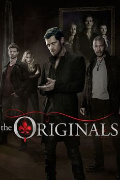
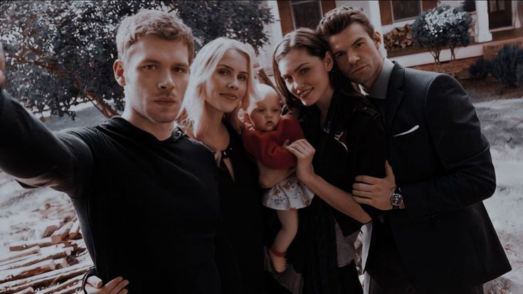
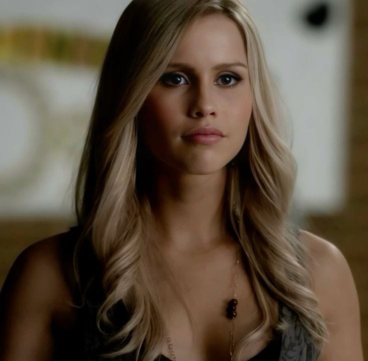
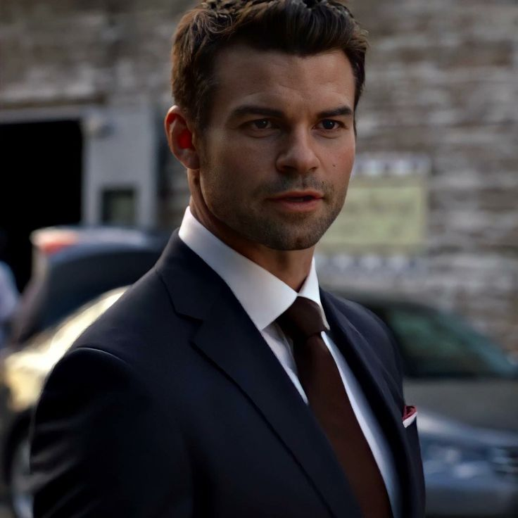

<html>
    <html lang="en">
        <head>
            <meta charset="utf-8">
            <meta name="viewport" content="width=device-width, initial-scale=1.0">
            <title>TD</title>
        </head>
</html>
<style>
    body{
        background-color: rgb(1, 3, 29);
        font-family: Arial;
        color: antiquewhite;
    }
    .sol_kisim{
        background-color: rgb(9, 3, 54);
        width: 20%;
        padding: 15px;
        text-align: center;
        float:left;
    }
    .sag_kisim{
        width: 75%;
        float: right;
    }
    .menu{
        list-style-type: none;
        margin-bottom: 50px;
        width: 100%;
    }
    .menu li{
        padding: 3px;
        border-bottom: solid 3px white;
        float: left;
        font-display: none;
    }
    .menu li:hover{
        background-color: transparent;
    }
    a{color:white;
    text-decoration: none;}
    .btn{
    width: 13em;
    height: 3em;
    border-radius: 20em;
    font-size:small;
    border: none;
    position: absolute;
    cursor: pointer;
    overflow: hidden;
    z-index: 1;
    box-shadow: 6px 6px 12px #000000, -6px 6px 12px #030101;
    float: center;
    place-items: center;
    right: 33% ;
}
.btn::before{
    content: '';
    width: 0;
    height: 3em;
    border-radius: 30em;
    position: absolute;
    top: 0;
    left: 0;
    background-image: linear-gradient(to right, #ffffff 0%, #ffffff 100%);
    transition: .5s ease;
    display: block;
    z-index: -1;
}
.btn:hover::before{
    width: 9em;
}
</style>
</head>
<body>
    <div class="sol_kisim">
        
        <br>The Vampire Diaries<br>
        <ul class="menu">
            <li><a href="karakterlerto.html">Karakterler</a></li><br><br>
            <li><a href="oyuncularto.html">Oyuncular</a></li><br><br>
            <li><a href="galerito.html">Galeri</a></li><br><br>
            <li><a href="videolarto.html">Videolar</a></li><br><br>
            <li><a href="giris.html">Giriş</a></li><br><br>
        </ul>
        19.12.2024 tarihinde açıldı. <br><br>
        Tuğçe Dinçer
</div>
<div class="sag_kisim">
    
    <h1>Tanıtım</h1>
    <h4>The Originals, 2013'ten beri devam eden ve şu anda beşinci sezonunda olan The Vampire Diaries'in spin-off'udur. Dünyanın ilk vampirleri olan Mikaelson ailesinin dramatik hikayesini ve New Orleans'taki ilişkilerini ve güç mücadelelerini anlatıyor.</h4>
    <h4>Dizi Klaus, Elijah ve Rebekah Mikaelson kardeşlere odaklanıyor. 'Originals' olarak bilinen bu vampirler, dünyanın ilk vampirleridir ve bin yılı aşkın bir geçmişe sahiptirler. Klaus'un yarı vampir, yarı kurt adam olan melez kimliği hikayeye benzersiz bir dinamik katıyor.</h4>
    <h4>The Originals, cadılar, vampirler, kurtadamlar ve insanlardan oluşan karmaşık bir topluma sahip New Orleans'ın büyüleyici ve karanlık atmosferinde geçiyor. Şehrin zengin bir kültürü ve dizide büyük rol oynayan doğaüstü unsurları var.</h4>
    <h4>Klaus Mikaelson, New Orleans'ın kontrolünü ele geçirmek ve ailesinin geleceğini güvence altına almak için bir görevdedir, ancak yol boyunca eski arkadaşları ve düşmanlarıyla uğraşmak zorundadır. Hikayenin merkezinde Klaus'un hırsı ve ailesiyle olan karmaşık ilişkisi yer alıyor.</h4>
    <h4>The Originals doğaüstü savaşlardan çok daha fazlasını anlatıyor. Aynı zamanda güçlü bir aile hikayesi. Mikaelson kardeşler arasındaki sevgi, ihanet ve fedakârlık dizinin büyük bir parçası ve 'Daima ve Sonsuza Kadar' sloganı tamamen ailenin birbirine olan bağlılığıyla ilgili.</h4>
    <h4>New Orleans'taki cadı topluluğu, Klaus ve ailesinin gücüne direnen cadıların büyü ve lanetlerle işleri sürekli daha karmaşık hale getirmesiyle dizide önemli bir oyuncu... Davina Claire'in karakteri özellikle genç bir cadı olarak etkileyici.</h4>
    <h4>Klaus'un kurt adam kökenlerinden gelen Hayley Marshall da hikayede önemli bir rol oynuyor. Hayley, Klaus'un kızı Hope Mikaelson'ın annesi ve Hope'un doğumu hem Mikaelson ailesi hem de doğaüstü topluluk için bir dönüm noktası. </h4>
    <h4>Elijah Mikaelson ailenin onuru ve vicdanıdır, Klaus ile ilişkisi karmaşıktır ve aileyi bir arada tutmaya çalışır, bu da hikayeyi gerçekten duygusal hale getirir. Elijah hem bir savaşçı hem de bir diplomattır ve aileye rehberlik etmeye çalışır.The Originals'ın bazı harika antagonistleri vardır: Marcel Gerard, New Orleans'ın kralı olarak Klaus'a karşı çıkan eski bir arkadaştır ve ayrıca cadılar, kurtadamlar ve vampirler arasında sürekli güç mücadeleleri vardır.</h4>
    <h4>Ancak mesele sadece doğaüstü şeyler değil - The Originals karmaşık karakterleri ve güçlü temalarıyla izleyiciler üzerinde gerçekten iz bıraktı. Aile, güç, fedakarlık ve bağışlama gibi evrensel temaları ele alıyor ve bunu vampir hikayelerini taze hissettiren gerçekten sofistike bir şekilde yapıyor. dizinin hayran kitlesi hala onu sevgiyle hatırlıyor.</h4>
    <br>
    <a href="karakterlerto.html"></a>
    <a href="karakterlerto.html"></a>
    <a href="karakterlerto.html"></a><br><br>
    <a href="karakterlerto.html"><button class="btn">Daha fazla karakter için!</button><br><hr/>
</div>
</body>
</html>